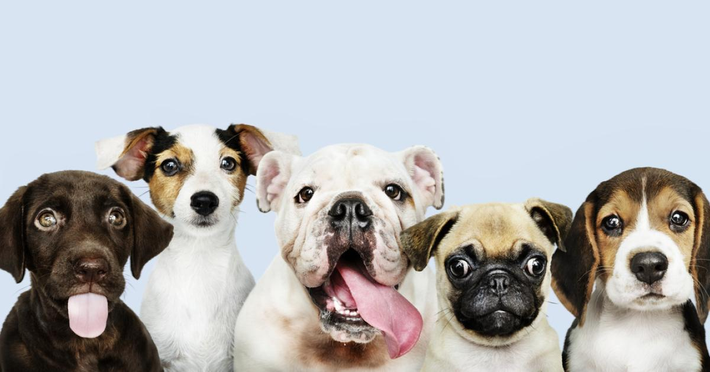
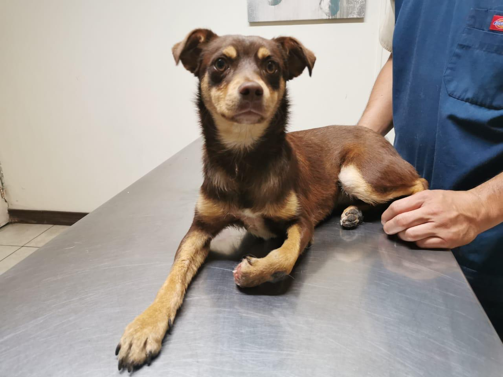

NOSOTROS
Misión
Nuestra misión es transformar la vida de los animales sin hogar al brindarles una segunda oportunidad de ser parte de una familia amorosa y responsable. Nos dedicamos a rescatar, rehabilitar y reubicar animales abandonados, asegurándonos de que reciban el cuidado y la atención necesarios mientras buscamos el hogar perfecto para cada uno de ellos. Creemos que cada animal merece vivir en un entorno seguro y lleno de afecto, y trabajamos incansablemente para educar a la comunidad sobre la importancia de la adopción y el bienestar animal.
Juntos, podemos crear un mundo donde cada mascota tenga un hogar para siempre.

Metas
Incrementar el Número de Adopciones: Aumentar el número de animales adoptados anualmente, garantizando que cada uno encuentre un hogar adecuado y permanente.
Alianzas Estratégicas: Establecer alianzas con veterinarios, empresas de alimentos para mascotas, y otros refugios para asegurar que los animales reciban la mejor atención posible, así como para facilitar el proceso de adopción.
Campañas de Esterilización: Realizar campañas masivas de esterilización en Bogotá y alrededores, con el objetivo de reducir el número de animales callejeros en un 30% en los próximos 5 años.

Visión
Nuestra visión es construir un mundo donde cada animal tenga un hogar lleno de amor y respeto. Nos esforzamos por ser un referente en la promoción de la adopción responsable, inspirando a la comunidad a ver a los animales como seres que merecen cuidado y afecto. Aspiramos a reducir significativamente el número de animales abandonados y sin hogar mediante la educación, la concienciación y la creación de redes de apoyo para la adopción y el bienestar animal.
